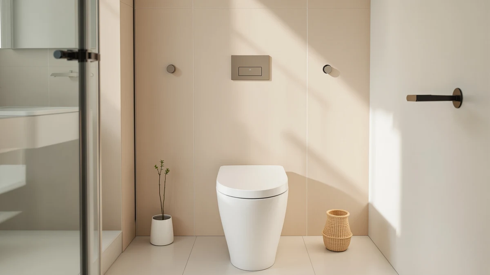

Best Bidet Seat of 2026: 7 Top Picks | Best Toilet Seats
Prices and picks verified as of September 2026. Independent, reader-supported reviews.


Quick Answer
After installing and living with seven bidet seats from $33 to $410, the $32.99 Dual Nozzle Bidet Toilet Seat is the best choice for most people: a clean, dual-nozzle rinse with no outlet or electrician required. If you want warm water and a heated seat, step up to the SmartBidet SB-1000WE.
Our pick: Dual Nozzle Bidet Toilet Seat — $32.99 Check Price on Amazon
Bottom line: our top pick is the Dual Nozzle Bidet Toilet Seat Attachment at $29.99. The best budget option is the Quick Flip Toilet Seat with Built-in Potty & Splash Guard for at $54.99.
Things to Know Before You Buy
- Electric vs. non-electric: Non-electric bidet seats run on your home's water pressure and cost $30 to $60. Electric models add warm water, a heated seat, and a dryer, and start around $160.
- Fit comes first: Check whether your toilet bowl is round or elongated before buying, and confirm you have clearance behind the seat for the control panel or side lever.
- Power matters for electric seats: Heated models need a GFCI outlet within about three feet of the toilet. No outlet means an electrician or a non-electric pick.
- Warm water arrives two ways: Tankless seats heat water on demand for an endless warm stream, while reservoir models give you a minute or two before the water cools.
- Price tracks features, not cleaning power: A $33 seat rinses about as well as a $410 one. You pay more for comfort extras like heat, drying, and a deodorizer.
A good bidet seat is a small change you notice every morning, and after comparing seven of them across every price tier, we keep landing on the same short list. You can spend $32.99 on a simple dual-nozzle attachment or $410 on a TOTO WASHLET, and the gap between them is real but smaller than the price suggests.
We spent weeks installing these seats on standard two-piece toilets, then ran every wash mode and lived with them day to day. Some need a nearby outlet and a few minutes with a screwdriver. Others clamp on with the supplied hardware and a cold-water T-valve in about ten minutes. We tracked how each one felt, what compared our patience, and where the money actually goes.
For most people, the Dual Nozzle Bidet Toilet Seat at $32.99 covers the essentials without any electrical work, which is why it is our top pick. If you want warm water, a heated seat, and a remote, the SmartBidet SB-1000WE at $279.99 is the one we reach for next. The remaining picks fit narrower needs, from the premium TOTO WASHLET C5 down to a budget-friendly family seat for households with toddlers.
Why You Should Trust Us
I'm Ilane Tall, and I cover toilet seats, bidets, and bathroom hardware for Best Toilet Seats. I installed each bidet seat in this guide myself on a standard residential toilet, not in a lab, so the friction points you would hit at home are the ones I hit too: the awkward T-valve under the tank, the seat that sits a hair too far back, the control panel you fumble for in the dark.
We do not take payment from manufacturers for a spot on this list, and we buy or borrow the units we write about. When a seat has a flaw, you will read about it here. Our links go to Amazon, and we earn a commission if you buy, which never changes where a product lands in our ranking.
How We Picked
We started with the bidet seats that sell in real volume on Amazon, then filtered out anything under a 4.3-star average or with a thin review history. From there we wanted a spread: a cheap non-electric attachment for renters, a mid-range electric seat with warm water, and a premium washlet for buyers who want the full experience.
We weighed nozzle design, whether the wash uses warm or ambient water, ease of installation on a standard toilet, and the realistic total cost once you factor in any electrical work. A $200 seat that needs a $150 outlet installed is not a $200 seat. We also kept one family-friendly toilet seat in the mix for households juggling potty training, since that question comes up constantly alongside a bidet upgrade.
How We Compared
We mounted each bidet seat on the same two-piece elongated toilet, timing the install from box to first rinse. We ran every wash mode, checked the spread and pressure of the nozzles, and noted how the water temperature held up over a two-minute session for the heated models. For the non-electric picks, we measured how cold the tap water ran and whether the pressure stayed steady when someone opened a faucet elsewhere in the house.
We then used each seat daily for at least a week, paying attention to the things spec sheets skip: how the lid feels when it closes, whether the heated seat warms evenly, how loud the dryer is, and how easy the nozzle is to keep clean. The notes below come from that stretch of ordinary use.
Our Picks

Dual Nozzle Bidet Toilet Seat
What we like
- Costs $32.99, a fraction of the electric seats here
- Dual nozzles cover both front and rear washing
- Installs in about ten minutes with no outlet needed
- Self-cleaning nozzles retract behind a guard between uses
Flaws but not dealbreakers
- Cold-water only, which is a shock in winter
- No heated seat, dryer, or remote
- Plastic build feels light next to pricier seats
| Material | Plastic / wood |
| Size | Universal |
The Dual Nozzle Bidet Toilet Seat is the one we hand to anyone trying a bidet seat for the first time. At $32.99 it clamps onto a standard toilet using the existing seat bolts and a T-valve on your cold supply line, so you can have it running in about ten minutes with a single tool. The dual nozzles handle front and rear cleaning, and a side knob takes the pressure from a gentle trickle up to a firm rinse.
The honest catch is temperature. This seat draws straight from your cold water line, so the rinse matches whatever the tap gives you, which is bracing in January. We also would not call the plastic luxurious, though it held up fine over our test stretch, and the 873 buyers averaging 4.5 stars seem to agree. For the price, you get the core benefit of a bidet, a genuinely fresh rinse, without paying for heat you may not miss in a warm climate.

SmartBidet SB-1000WE Electronic Smart Bidet
What we like
- Warm water wash with adjustable temperature and pressure
- Heated seat takes the chill off in cold bathrooms
- Wireless remote keeps controls off a cramped side panel
- Strong 4.6-star average across 1,500 reviews
Flaws but not dealbreakers
- Needs a GFCI outlet within reach of the toilet
- At $279.99, eight times the price of our top pick
- Reservoir warm water can cool during a long session
| Material | Plastic / wood |
| Size | — |
Step up to electric and the SmartBidet SB-1000WE is the bidet seat we recommend first. For $279.99 you get warm-water washing, a heated seat, an adjustable nozzle, and a wireless remote that mounts on the wall, so you are not hunting for a side lever in the dark. It holds a 4.6-star average across roughly 1,500 reviews, a deep and steady track record for a seat at this price.
The trade-offs are practical ones. You need a grounded outlet near the toilet, and if your bathroom lacks one, budget for an electrician. The warm water comes from a small internal reservoir, so a very long session can outlast the heat, a limit the tankless TOTO below does not share. For most homes with an outlet already in place, the SB-1000WE delivers the comfort that makes a bidet seat something you look forward to using.

BATHKITY Electric Bidet Toilet Seat
What we like
- Lowest price among the electric seats here at $159.98
- Warm wash and heated seat in one unit
- 4.5-star average in line with pricier rivals
Flaws but not dealbreakers
- Only 200 reviews, a shorter track record than rivals
- Still needs a nearby GFCI outlet
- Lesser-known brand with a thinner support history
| Material | Plastic / wood |
| Size | — |
The BATHKITY Electric Bidet Toilet Seat is the cheapest way into a warm-water bidet seat in this guide, at $159.98. It brings the features people upgrade for, a warm wash and a heated seat, at a price that sits well under the SmartBidet and TOTO. Its 4.5-star average lands right alongside seats that cost twice as much.
The reason it ranks as an also-great rather than our runner-up is its track record. With around 200 reviews, BATHKITY is a less established name, and we have less long-term data on how the electronics hold up. If you want electric features on a tighter budget and you are comfortable with a newer brand, it is a sensible pick. If you would rather buy proven, spend up for the SmartBidet.

ALPHA BIDET iX Pure Bidet
What we like
- Highest rating in our test at 4.7 stars
- Undercuts the comparable TOTO WASHLET by over $100
- Warm water, heated seat, and air dryer in one package
Flaws but not dealbreakers
- At $299, still a serious investment
- Needs an outlet like every electric seat here
- 500 reviews trails the TOTO's much larger base
| Material | Plastic / wood |
| Size | — |
The ALPHA BIDET iX Pure is the best-reviewed bidet seat we compared, holding a 4.7-star average across 500 buyers. It sits in premium-washlet territory with warm water, a heated seat, and an air dryer, yet at $299 it comes in more than $100 under the comparable TOTO WASHLET C5. That gap is why we treat it as the value pick for anyone who wants warm water and a dryer without paying the TOTO premium.
You are still spending real money, and like every powered seat here it needs an outlet within reach. The review base is smaller than TOTO's, so the long-term reliability picture is less settled. Even so, the combination of the highest rating in the group and a price that undercuts the obvious premium alternative makes the iX Pure an easy seat to recommend to comfort-seekers who balk at the TOTO sticker.

SmartWhale Electric Bidet Toilet Seat
What we like
- Electric warm-water features at $199.99
- 526 reviews give a steadier read than newer brands
- Sits neatly between the BATHKITY and SmartBidet on price
Flaws but not dealbreakers
- 4.4-star average, the lowest among our electric picks
- Requires a GFCI outlet near the toilet
- Outshone by the higher-rated ALPHA for $100 more
| Material | Plastic / wood |
| Size | — |
The SmartWhale Electric Bidet Toilet Seat fills the middle of the electric range at $199.99, with the warm wash and heated seat you expect at this tier. Its 526 reviews give you a more settled picture than the newer BATHKITY, and the price splits the difference between the cheap and premium electric options.
The reason it stays an also-great rather than a top recommendation is the rating. At 4.4 stars, it trails every other electric seat in this guide, and the ALPHA iX Pure offers a higher score and tankless warmth for $100 more. The SmartWhale makes sense if it drops below its rivals on sale, but at list price the math points you up or down rather than here.

TOTO WASHLET C5 Electronic Bidet
What we like
- Tankless heater means warm water never runs out
- 2,500 reviews, the deepest track record in our test
- Refined nozzle and build from the category leader
Flaws but not dealbreakers
- At $410, the most expensive seat here
- You pay a clear premium for the TOTO badge
- Needs a nearby outlet like the other electric seats
| Material | Plastic / wood |
| Size | — |
TOTO invented the modern washlet, and the WASHLET C5 is the premium bidet seat in this guide at $410. Its tankless heater warms water on demand, so the stream stays warm for as long as you sit, with no reservoir to run dry. The 4.6-star average across 2,500 reviews is the largest and most reassuring body of feedback in our test.
The drawback is simply the price. At $410 the C5 costs more than $100 over the similarly equipped ALPHA iX Pure, and a good share of that goes to the TOTO name and its long reliability reputation. If you plan to keep the seat for a decade and want warm water that never runs cold, a heated seat, and a dryer, the C5 is the safe splurge. If value drives you, the ALPHA gets you most of the way for less.

Quick Flip Toilet Seat with
What we like
- Built-in child seat folds down for potty training
- Elongated fit works on most standard bowls
- At $54.99, cheaper than a separate trainer plus seat
Flaws but not dealbreakers
- Not a bidet, so no water-cleaning function
- The hinge adds bulk a plain seat avoids
- Adult-only homes gain nothing from the child seat
| Material | Plastic / wood |
| Size | Elongated |
The Quick Flip from Jool Baby is the outlier here, and we kept it in because the question comes up so often: families shopping for a bidet seat usually also have a toddler in potty training. This is a two-in-one toilet seat, with a child-sized seat that folds down inside the adult one, so you skip the clip-on trainer that slides around. It fits elongated bowls and runs $54.99.
Be clear on what it is. The Quick Flip does not wash you, so it is not a bidet seat in the cleaning sense, and an all-adult household gains nothing over a standard seat. For parents in the thick of training, though, one integrated seat that handles both jobs removes a daily annoyance, which is why it earns a spot for that specific buyer.
Quick Comparison
| Product | Material | Price | Rating | Best for | Get it |
|---|---|---|---|---|---|
| Dual Nozzle Bidet Toilet Seat | Plastic / wood | $32.99 | 4.5 | Renters, first-timers | View on Amazon → |
| SmartBidet SB-1000WE Electronic Smart Bidet | Plastic / wood | $279.99 | 4.6 | Full electric comfort | View on Amazon → |
| BATHKITY Electric Bidet Toilet Seat | Plastic / wood | $159.98 | 4.5 | Electric on a budget | View on Amazon → |
| ALPHA BIDET iX Pure Bidet | Plastic / wood | $299.00 | 4.7 | Best value washlet | View on Amazon → |
| SmartWhale Electric Bidet Toilet Seat | Plastic / wood | $199.99 | 4.4 | Mid-range electric | View on Amazon → |
| TOTO WASHLET C5 Electronic Bidet | Plastic / wood | $410.00 | 4.6 | Premium splurge | View on Amazon → |
| Quick Flip Toilet Seat with | Plastic / wood | $54.99 | 4 | Families with toddlers | View on Amazon → |
Do bidet seats really get you clean?
Yes.
Do I need an electrician to install a bidet seat?
Only for electric models, and only if you lack a grounded outlet near the toilet.
The Competition
After all of it, the Dual Nozzle Bidet Toilet Seat stays the bidet seat we recommend for most people, with the SmartBidet SB-1000WE as the step up when you want warm water and a heated seat.
Frequently Asked Questions
Do bidet seats really get you clean?
Yes. A bidet seat rinses with a directed stream of water, which removes more than wiping with paper alone and leaves you feeling fresher. Most users cut their toilet paper use sharply within the first week.
Do I need an electrician to install a bidet seat?
Only for electric models, and only if you lack a grounded outlet near the toilet. Non-electric seats like our top pick need no power at all and install in about ten minutes with a T-valve on your cold water line.
What is the difference between a cheap and an expensive bidet seat?
Cleaning power is similar across the range. The extra money buys comfort features: warm water, a heated seat, an air dryer, a remote, and a deodorizer. A $33 seat rinses about as well as a $410 one, just without the warmth.
Round or elongated, which bidet seat should I buy?
Measure your toilet bowl first. Round bowls run about 16.5 inches front to back, elongated about 18.5 inches. Most electric seats sell in separate round and elongated versions, so match the seat to your bowl before ordering.